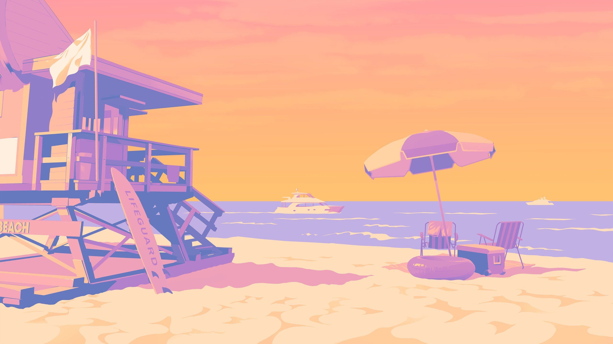
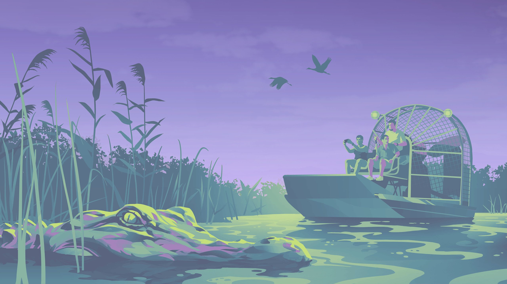
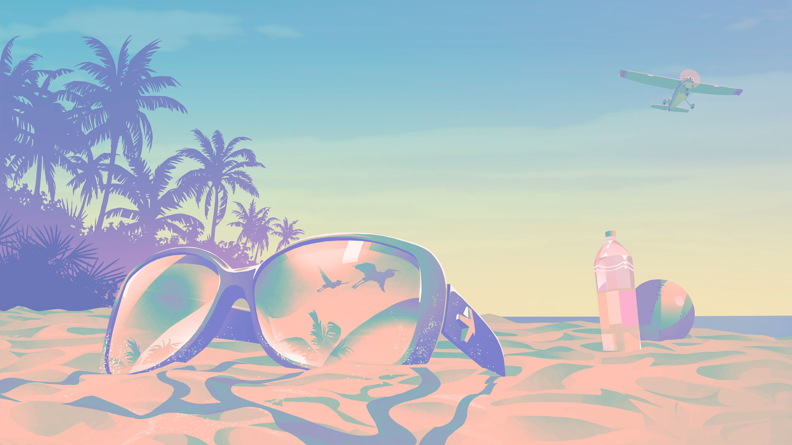
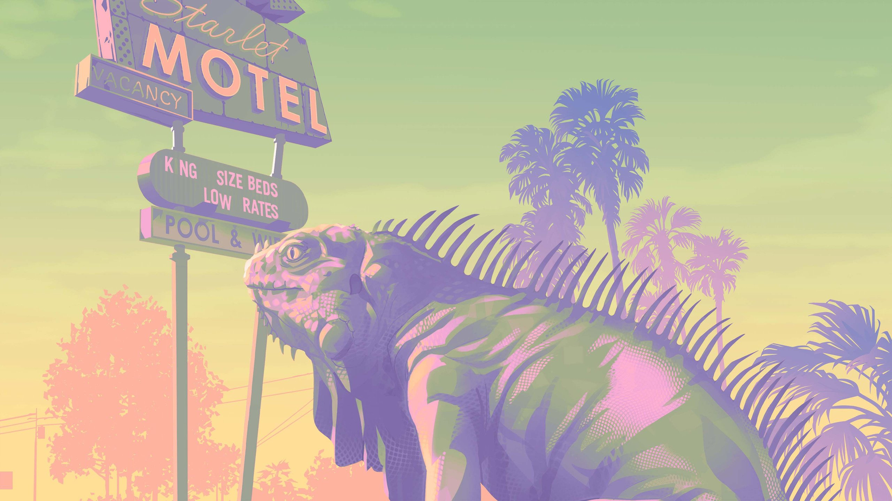
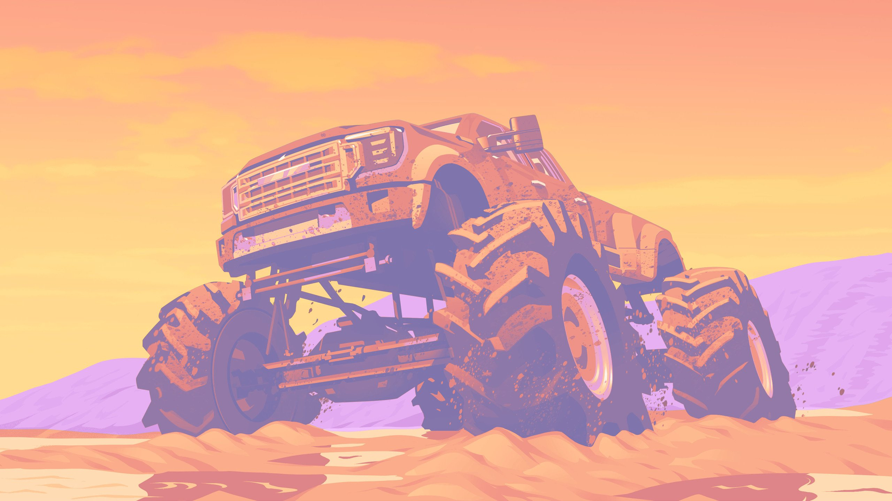
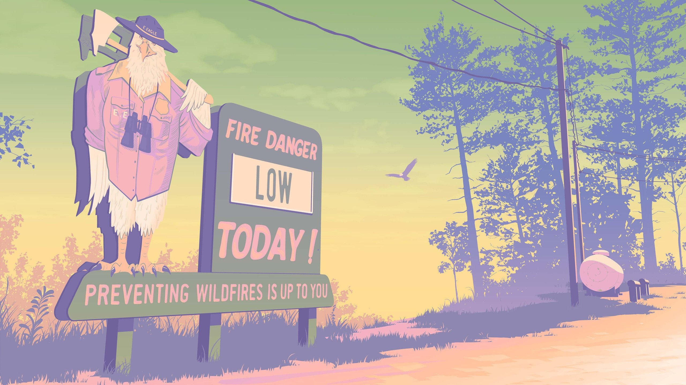
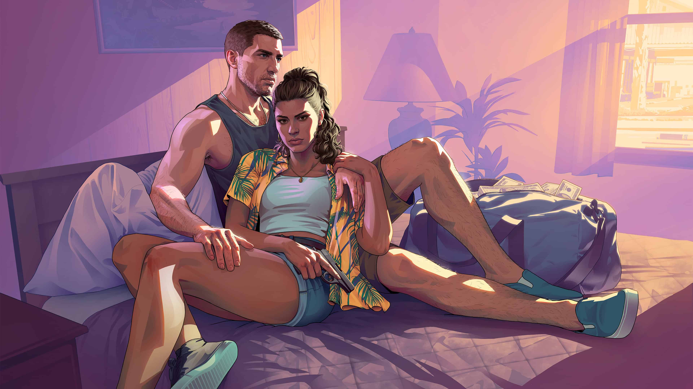

Overview
Leonida 州概览
Leonida 是 GTA6 的核心舞台，一个以美国佛罗里达州为原型的虚构地区。这片土地拥有让人叹为观止的地理多样性——从繁华的都市丛林到人迹罕至的沼泽深处，从碧蓝的热带海岛到巍峨的国家公园，每一寸土地都有自己的故事。
地图面积预计是 GTA5 的近两倍，包含至少五个郡和多座城市。这不只是地图变大了——而是世界变深了。每个区域都有独特的文化氛围、生态系统和活动内容。
2x
GTA5 地图面积
700+
可进入建筑
5+
郡与城市
40%
建筑可探索
Leonida 州全地图（社区重建版）

基于预告片和官方素材，由 GTA Mapping Community 精心重建的 Leonida 州全地图。官方完整地图尚未公布。
Regions
六大区域

Vice City
霓虹都市 · 迈阿密
Leonida 的心脏——以迈阿密为原型的海滨大都市。霓虹闪烁的夜店、棕榈成荫的海滩大道、摩天大楼的玻璃幕墙映射着落日余晖。这里是财富与犯罪交织的天堂，是 GTA6 最核心的活动舞台。从 Ocean Drive 到 Little Havana，每条街道都有自己的性格。

Grassrivers
沼泽荒野 · 大沼泽地
以佛罗里达大沼泽地为原型。浓密的红树林、缓缓流淌的水道、潜伏在水面下的鳄鱼。这里是犯罪者的藏身之地，也是大自然最原始力量的展示场。

Leonida Keys
热带群岛 · 佛罗里达群岛
以佛罗里达群岛为原型的连串热带小岛。碧绿的海水、白沙滩、慵懒的氛围——以及暗流涌动的走私网络。Jason 曾在这里为毒贩跑腿，这里也是故事开始的地方之一。

Port Gellhorn
港口城市
一座繁忙的港口城市，集装箱码头和工业区与居民社区交错。货物在这里进出，合法的和不合法的。港口是 Leonida 地下经济的重要枢纽。

Ambrosia
内陆小镇
远离海岸的内陆小镇，有着典型的美国南方小镇风情。农田、加油站、破旧的汽车旅馆——看似平静的表面下，藏着自己的故事和秘密。

Mount Kalaga
国家公园
Leonida 州的制高点，一片壮丽的自然保护区。茂密的森林、蜿蜒的登山步道、野生动物的栖息地。这里是逃离城市喧嚣的净土，也是某些人隐藏秘密的完美地点。
Living World
活的世界
Leonida 不是一张静态的地图——它是一个呼吸着的有机体。日夜交替带来完全不同的城市面貌：白天的 Vice City 是阳光海滩和购物天堂，夜晚则变成霓虹闪烁的犯罪温床。
动态天气系统让这个世界更加不可预测。热带风暴会突然降临，淹没低洼地区的街道，吹倒路边的电线杆。飓风期间，NPC 们会紧急寻找避难所，街道上的交通陷入混乱。
水下世界同样令人惊叹。潜入 Leonida Keys 周围的海域，你会发现沉船、宝藏和丰富的海洋生物。鲨鱼在深水区巡游，海豚在浅水区嬉戏，珊瑚礁中隐藏着等待发现的秘密。
